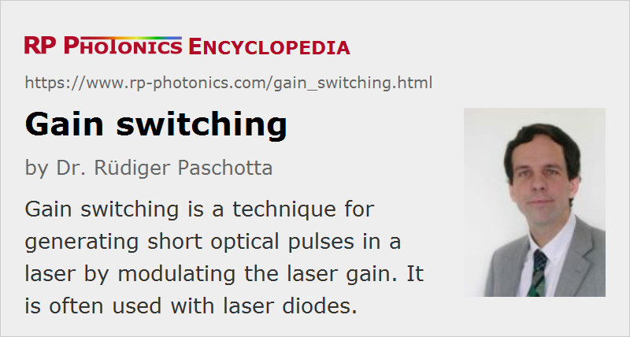

Gain Switching
Definition: a technique for generating short optical pulses in a laser by modulating the laser gain
German: Verstärkungsschalten
Categories: lasers, light pulses
How to cite the article; suggest additional literature
Author: Dr. Rüdiger Paschotta
Gain switching is a method for pulse generation by quickly modulating the laser gain via the pump power. If a high pump power is suddenly applied to a laser, laser emission sets in only with a certain delay, as it starts with weak fluorescence light, which first needs to be amplified in a number of resonator round trips. Therefore, some amount of energy can be stored in the gain medium, which is subsequently extracted in the form of a short pulse. The pulse obtained can be shorter than the pump pulse and also shorter than the upper-state lifetime; the dynamics are essentially as in the phenomenon of spiking, where the pump power is applied for a short enough time to generate only a first spike.
The higher the pump pulse energy, the shorter is the pulse build-up time, and consequently the required pump pulse duration. The pulse build-up time of a gain-switched laser can be increased by using a longer laser resonator, but this also increases the output pulse duration.
The pump power may be completely switched off between the pulses, or may be kept at a level just below the laser threshold.
Application of Gain Switching
Gain switching can be applied to various types of lasers:
Gas Lasers
Some gas lasers can be operated with a pulsed excitation current. This is often done with TEA carbon dioxide lasers (CO2 lasers), which are suitable only for pulsed operation. However, the result is not necessarily gain switching in the sense of using the first emitted spike; it may also be a kind of quasi-continuous-wave operation over a limited duration.
Dye Lasers
In other cases, a pulsed laser is used for optically pumping a gain-switched laser. For example, nitrogen ultraviolet lasers or excimer lasers can be used for pulsed pumping of dye lasers.
Solid-state Lasers
A solid-state bulk laser or fiber laser can emit a single spike if it is pumped only for up to a few microseconds. The pulse duration may be of the order of tens to hundreds of nanoseconds. That operation mode is rarely used, however, due to the limited pulse energy.
Laser Diodes
It is also possible to operate a laser diode with short current pulses, or with a continuously modulated signal. This can lead to pulses with durations of a few nanosecond or even down to a few tens of picoseconds, and with pulse repetition rates up to several gigahertz, as used in telecom applications. With additional pulse compression, one can reduce the pulse durations further to below 4 ps [10].
In contrast to mode-locked lasers, gain-switched laser diodes easily allow one to adjust the pulse repetition rate in a wide range, since it can be controlled with an electronic driver without changing the laser resonator setup. Also, they are simpler and more compact. However, the timing jitter and also fluctuations of other pulse parameters are larger than for a mode-locked laser. Subsequent pulses are not mutually coherent.
The pulse energy of a gain-switched laser diode is fairly limited, since the peak power can usually not be much higher than for longer pulses. When trying to produce longer pulses with higher energy, the gain-switched peak can be disturbing, if one needs a smooth temporal pulse profile.
An interesting approach to the generation of energetic nanosecond pulses is to combine a gain-switched laser diode with a fiber amplifier. In this way, pulses with microjoule or millijoule energies can be generated. This method provides a high flexibility in terms of pulse duration, shape and repetition rate. However, a rather high amplifier gain is needed due to the low seed pulse energy, and therefore one often requires more than one amplifier stage and additional optical filters for achieving sufficient suppression of amplified spontaneous emission.
Gain-switched laser diodes may also be used as seed lasers for optical parametric amplifiers.
Suppliers
The RP Photonics Buyer's Guide contains 6 suppliers for gain-switched lasers.
Questions and Comments from Users
Here you can submit questions and comments. As far as they get accepted by the author, they will appear above this paragraph together with the author’s answer. The author will decide on acceptance based on certain criteria. Essentially, the issue must be of sufficiently broad interest.
Please do not enter personal data here; we would otherwise delete it soon. (See also our privacy declaration.) If you wish to receive personal feedback or consultancy from the author, please contact him e.g. via e-mail.
By submitting the information, you give your consent to the potential publication of your inputs on our website according to our rules. (If you later retract your consent, we will delete those inputs.) As your inputs are first reviewed by the author, they may be published with some delay.
Bibliography
| [1] | P.-T. Ho et al., “Picosecond pulse generation with a cw GaAlAs laser diode”, Appl. Phys. Lett. 33 (3), 241 (1978), doi:10.1063/1.90312 |
| [2] | H. Ito et al., “Picosecond optical pulse generation from an r.f. modulated AlGaAs double heterostructure diode laser”, Electron. Lett. 15, 738 (1979), doi:10.1049/el:19790528 |
| [3] | C. Lin et al., “Simple picosecond pulse generation scheme for injection lasers”, Electron. Lett. 16, 600 (1980), doi:10.1049/el:19800416 |
| [4] | J. AuYeung, “Picosecond optical pulse generation at gigahertz rates by direct modulation of a semiconductor laser”, Appl. Phys. Lett. 38, 308 (1981), doi:10.1063/1.92351 |
| [5] | T. Sogawa et al., “Observation of a short optical pulse (< 1.3 ps) from a gain switched quantum well laser”, Appl. Phys. Lett. 53, 1580 (1988), doi:10.1063/1.99955 |
| [6] | P. Paulus et al., “Generation and optimum control of picosecond optical pulses from gain-switched semiconductor lasers”, IEEE J. Quantum Electron. 24 (8), 1519 (1988), doi:10.1109/3.7078 |
| [7] | J. J. Zayhowski et al., “Gain-switched pulsed operation of microchip lasers”, Opt. Lett. 14 (23), 1318 (1989), doi:10.1364/OL.14.001318 |
| [8] | K. Iwatsuki et al., “Generation of transform limited gain-switched DFB-LD pulses < 6ps with linear fibre compression and spectral window”, Electron. Lett. 27 (21), 1981 (1991), doi:10.1049/el:19911227 |
| [9] | M. Jinno, “Correlated and uncorrelated timing jitter in a gain-switched laser diodes”, IEEE Photon. Technol. Lett. 5 (10), 1140 (1993), doi:10.1109/68.248407 |
| [10] | L. Chusseau and C. Kazmierski, “Optimum linear pulse compression of a gain-switched 1.5 μm DFB laser”, IEEE Photon. Technol. Lett. 6 (1), 24 (1994), doi:10.1109/68.265878 |
| [11] | N. Stelmakh et al., “Generation of high-energy (0.3 μJ) short pulse (< 400 ps) from a gain-switched laser diode stack with sub-ns electrical pump pulses”, J. Sel. Top. Quantum Electron. 3 (2), 245 (1997), doi:10.1109/2944.605664 |
| [12] | A. Fragemann et al., “Optical parametric amplification of a gain-switched picosecond laser diode”, Opt. Express 13 (17), 6482 (2005), doi:10.1364/OPEX.13.006482 |
| [13] | P. Dupriez et al., “High average power, high repetition rate, picosecond pulsed fiber master oscillator power amplifier source seeded by a gain-switched laser diode at 1060 nm”, IEEE Photon. Technol. Lett. 18 (9), 1013 (2006), doi:10.1109/LPT.2006.873486 |
| [14] | P. M. Anandarajah et al., “System-performance analysis of optimized gain-switched pulse source employed in 40- and 80-Gb/s OTDM systems”, J. Lightwave Technol. 25 (6), 1495 (2007), doi:10.1109/JLT.2007.896760 |
| [15] | Y. Wang et al., “1 MHz repetition rate single-frequency gain-switched Nd:YAG microchip laser”, Laser Phys. Lett. 4 (8), 580 (2007), doi:10.1002/lapl.200710034 |
See also: pulse generation, pulses, spiking, mode locking, Q switching, nanosecond lasers
and other articles in the categories lasers, light pulses
|  |
If you like this page, please share the link with your friends and colleagues, e.g. via social media:
These sharing buttons are implemented in a privacy-friendly way!